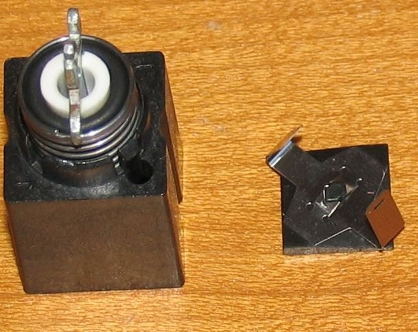
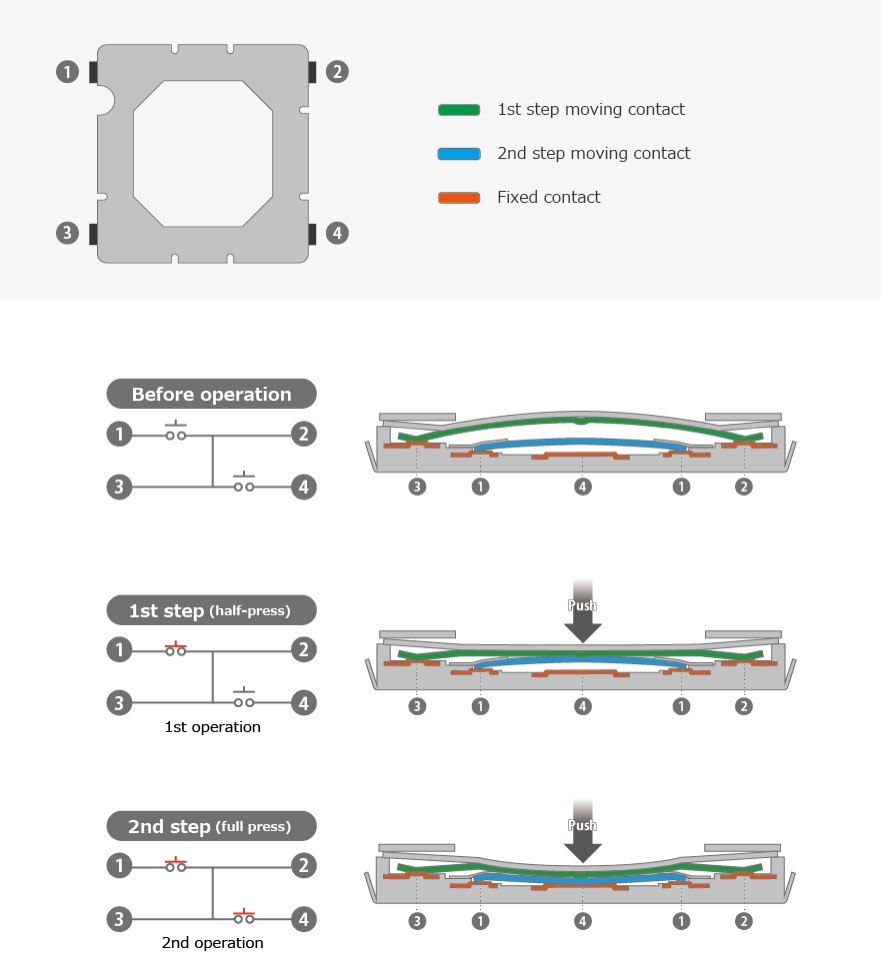
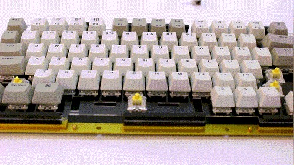
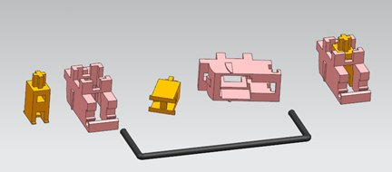
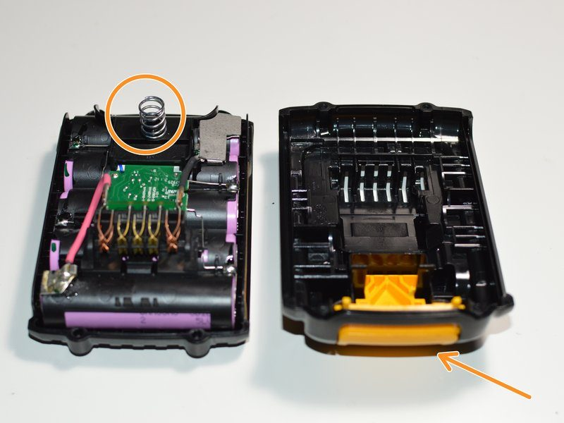

04
机构与运动
会动的机构：按压弹跳、锁扣、齿轮/蜗杆、凸轮连杆、弹簧、柔顺机构、力反馈。 本类共 45 篇。
按键机构 28 篇

16 英寸 MacBook Pro 剪刀脚键盘：1 mm 键程与交叉支架（对照蝶式）
2019 年 16 英寸 MacBook Pro 放弃蝶式，改回两片塑料交叉的剪刀脚：苹果新闻稿写键程 1 mm，并配上「能储存更多势能」的橡胶穹顶。iFixit 测得这套剪刀脚厚 1.38 mm，比桌面 Magic Keyboard 的 1.6 mm 略薄，键帽也加厚约 0.2 mm，而且不再铺硅胶防尘膜——间隙本身就能容忍更多碎屑。整块键盘却仍然铆在 C 壳上，可维修性没有一起回来。本篇只写剪刀脚，已收录的蝶式案例作为反面对照。

ALPS EC11 旋转编码器：11 mm 金属轴增量脉冲与可选按压开关
ALPS EC11 是 11 mm 规格的金属轴增量式旋转编码器：旋转时输出 A、B 两相脉冲，用来判断方向和格数；带按压的型号另有一套沿轴向的开关，和旋转编码不是同一套机构。目录中的 EC11E 系列额定 10 mA 5 V DC、操作寿命 15,000 cycles，定位扭矩 10±7 mN·m，定位数/脉冲数有 18/9、30/15、36/18 三档，轴长示例 20 mm，带开关时行程有 0.5 mm 或 1.5 mm。不要把它写成硅胶按键、锅仔或机械轴体那种“通用按键”。

Cherry MX 机械键盘轴：轴心、螺旋弹簧与金交叉触点
Cherry MX 是独立的机械轴体，不是笔记本里的剪刀脚或蝶式支架：键帽插在轴心（stem）上，轴心在壳里竖直滑动，螺旋弹簧负责回弹，轴心再驱动两片交叉的金属触点接通。官网页把这种触点叫做 Gold Crosspoint，两片三角形截面的触点相互垂直相切。以现行 MX2A RED 为例，数据表给出线性特性、操作力 45 cN、预行程 2 mm、总行程 4 mm、初压力 30 cN、末压力 100 cN、寿命大于 1 亿次。本篇对照已收录的 16 英寸 MacBook Pro 剪刀脚键盘：1 mm 键程与交叉支架（对照蝶式）：那边是整片键盘上的交叉支架 + 橡胶穹顶，这里是一颗可单独拆装的轴。

IBM Beam Spring键：片簧越中反转并向上提起飞板
柱塞向下压弓形片簧，片簧越中过后通过U形飞簧将电容飞板向上提起；按下键帽与感测板的运动方向相反。

IBM屈曲弹簧键：螺旋簧失稳产生力矩，驱动翻转锤
压缩螺旋簧并非只提供线性回弹，达到临界状态后侧向屈曲产生力矩，使下方枢轴锤翻转；手感与触发由同一失稳事件关联。

三位置使能握持键：松手OFF、轻握ON、过握OFF且回程不再导通
使能按钮只有中段行程允许工作；松手和惊慌时握得更紧都使触点断开，并且从最深位置释放时不再次使能。

应变式指点杆：十字薄片根部弯曲，将侧向按力变成二维输入
短杆把侧向指力传到十字薄片根部，利用局部弹性应变而非万向框大角度转动感测方向；这是近等长力输入的扩展结构。

急停蘑菇头：机械保持、刻意复位与触点脱落向安全侧断开
急停按下后机械保持，必须旋转或拉拔复位；直接断开与接触块脱落时断开是两条不同的安全链，不等于普通自锁按钮。

手机侧键传力结构：键帽、软胶导电基与壳体间隙链
手机侧键的关键不是再设计一套硅胶鼓或锅仔的力值曲线，而是**键帽如何把侧向按压传到壳内的轻触开关或锅仔**，以及壳体开孔、软胶裙边、FPC 支撑筋这一串间隙。艾邦转载的设计规范把行程定为推动开关或 FPC 侧键约 0.20–0.25 mm，并给出键帽–壳体、导电基–开关、裙边避让等一串经验间隙；工作熊拆解的 Sony Ericsson W550i 则展示了一种真实做法：塑胶帽套在橡胶薄膜上，靠壳体卡槽定位，FPC 折弯后把开关贴在侧壁，下面垫泡绵做缓冲。文中毫米数一律视为该规范/拆解的经验值，不要写成某款量产机的官方规格。

手柄十字键：中央半球支点与四向弹性触点的倾转选择
一个十字形键帽围绕中央半球支点倾转，外围四个压点选择导电胶触点，中央支点承担反力并限制整键直接平移。

拇指摇杆万向导向：正交转动框与中央弹簧回中
摇杆用正交运动约束把任意方向倾斜分解为X/Y两轴，中央回中弹簧负责释放后回正；电位器、霍尔或光学读数不另算新机构。

机械快门线：柔性芯与固定外套的反力闭环，远置按钮不传手部晃动
手持柱塞推动柔性芯，外套两端固定提供反力，末端小顶针压相机快门；不是电缆信号，也不是气动软管。
气动远置按钮：压缩气腔、软管与隔离的电气开关
按钮不是在面板后直接压电触点，而是压缩气腔，经软管把空气脉冲传给远置空气开关，使用户操作端与带电端分离。

灶具旋钮轴向解锁：先推或拉解除转动约束，阀芯压紧与解锁分工
旋钮的轴向动作不是独立电按钮，而是改变转动许可；必须先解除几何锁止再旋转，阀芯密封预压与解锁回位不能混作一根弹簧。

相机两段按键：上下金属动触点与分级力行程，不把两路电信号当两级手感
同一按压路径中上下两组动触点依次动作，以不同力值和行程区分半按和全按；必须同时核对机构与力行程表。

硅胶导电按键：斜壁荷重、碳粒与排气槽
硅胶导电按键用鼓包斜壁提供回弹和按压力，按压柱底面的碳粒（或镍粒、金粒）直接去闭合 PCB 上的触点；底面必须开排气槽，否则腔内空气会变成气垫，松手还可能倒吸回不来。它不是键盘里的剪刀脚或蝶式支架，也不是单独一颗金属锅仔片——硅胶鼓包本身就是弹性件和（多数时候的）开关。

翻盖式按键防误触：铰链、自动回盖弹簧与独立按钮
在普通按钮外增加必须先掀开的刚性盖，盖绕铰链打开后才露出操作面；开盖力、按钮力和密封等级需要独立定义。

联排按钮共享闩条：按新键释放旧键，互锁不自动等于禁止双按
各按钮上的斜面／凸肩推动一条横向闩条，越过斜面后在倒扣处保持；另一个按钮推动闩条即可释放先前选择。

脚踏开关：后铰轴踏板、独立防护罩与多级操作边界
踏板绕铰轴把脚力转为内部开关动作，外部罩承受掉落物并限定脚的进入方向；踏板机构与罩不能混为一个防水零件。

苹果蝶式键盘（反面案例）：变薄 40% 的代价与硅胶防尘膜补救
2015 年苹果为了把 12 英寸 MacBook 做到 13.1 mm，用「蝶式」结构替代剪刀脚：苹果称它比传统剪刀脚**薄 40%、稳 4 倍**，整个键盘薄 34%。代价是键程很短，键帽下的间隙也小，一粒灰就能卡住。2018 年第三代在支架上盖了一层冲切硅胶膜，iFixit 用荧光粉测试证明它能把大部分粉尘引到键帽边缘，但用沙子打一分钟字，**沙粒仍会从膜角上的孔钻进去卡死按键**；整块键盘还被铆钉、五星螺丝和胶固定在 C 壳上，几乎没法单独更换。2019 年 16 英寸 MacBook Pro 改回剪刀脚，键程 1 mm。

薄膜开关叠层：面板、间隔层、电路层与开窗排气
薄膜开关的主角是一层层 PET（或 PC、FPC、PCB）贴合出来的整张面板：最外是图文面板，中间是开了窗的间隔层，下面是电路层；按下时窗里的空气被挤走，触点闭合，松开后再分开。触感可以靠不锈钢弹片或面板凸包来加，但弹片只是叠层里的一层，不是本篇的唯一零件。排气开窗要在间隔层里设计好，否则手感发闷，密封场合还要决定用内排气还是排到产品内部。

跷板开关的弹簧柱塞：滑动压点、摇动触桥与中位自定心
外部跷板带着弹簧柱塞沿触桥滑动，压点跨越支承位置后改变触桥姿态；柱塞端部与触桥的匹配决定中位一致性。

金属压电按钮：连续金属面微挠曲，无可见滑动键程的扩展案例
连续金属操作面受力微挠并向压电片传力，没有穿壳滑动柱塞或翻转触点；输出通常是脉冲而非按住就持续闭合。

金属锅仔片阵列：直径、力值、行程与寿命互换
金属锅仔片是一枚双稳态金属圆片：按到峰值力后中心塌陷，发出「咔嗒」并接通电路，松手弹回。直径、力值和寿命要一起选——Snaptron 手册里，同是 6 mm 的 F06180（180 g）寿命做到 500 万次，F06300（300 g）却只标 1 万次。硅胶在这里如果出现，只是上面的传力帽；PET 叠层如果出现，只是定位和电路的配角，主角仍是这枚金属圆片。

键盘内胆Gasket悬置：把按键触底载荷从刚性螺柱改经弹性垫传到壳体
轴、定位板和PCB形成内胆，由周边Poron垫与壳体隔开；研究的是整块支承系统的缓冲，不是另一颗轴体。

长键卫星轴：双滑块与弯钢丝同步，偏心按压不再单端下沉
大键在主轴两侧增加无独立回位弹簧的导向滑块，用弯钢丝传递两端转角；研究对象是偏心载荷的同步约束，不是再收一种机械轴。

鼠标分体主键预压：独立键板、金属枢轴与弹簧张紧
把主键从整片外壳的弯曲中分离，借助枢轴和张紧弹簧控制空行程；研究键板到微动之间的上游传力，不重复微动内部簧片。

鼠标微动开关（Omron D2FC）：杠杆、簧片翻转与触点
鼠标里常见的「咔哒」不是 MX 那种十字轴体，而是一颗超小型瞬时微动：按钮把力传给内部的弹性杠杆/簧片，簧片在缺口里翻过死点，银触点迅速闭合，松手后簧片翻回。Omron 称之为 Ultra Subminiature Basic Switch。以 D2FC-F-7N（20M）为例，数据表给出操作力 0.59 ± 0.15 N、预行程 0.3 ± 0.2 mm、超行程至少 0.2 mm、机械/电气寿命至少 2000 万次。拆解文章显示：簧片必须准确挂在壳体缺口里，位置差一点开关就不再工作。
按压弹跳(Push-Push) 5 篇

Blum TIP-ON 按压弹开抽屉：柜体轨弹簧单元与抽屉锁止模块
Blum TIP-ON 做无拉手抽屉，不是把一颗心形槽锁嵌进门板那么简单：柜体轨上预装带弹簧的弹出单元（驱动件），抽屉底板下再装锁止/关闭模块；按一下面板内移，模块释放，轨上弹簧把抽屉弹出一段，再用手拉开。宽抽屉要加同步杆。它和 Nifco/ITW 那种单点撞销锁、以及按动笔的旋转凸轮，不在同一个装配层级上。

Nifco 经典心形槽 Push-Push：U 形销与片簧（对照 ITW 防变形版）
Nifco 专利 US4660871 把按压弹跳做成「平面心形变深槽 + 金属 U 形销 + 片簧」：U 形销一端走滑块顶面的心形槽，另一端铰接在壳体孔里，片簧始终把销压向槽底；槽底深浅台阶逼销单向绕心形走一圈，按一下锁、再按一下弹开。滑块下方还有斜向卡爪去抓门板上的撞销。这和 ITW 用塑料随动件加导槽强制开合夹爪、以及按动笔用同轴旋转分度凸轮，都不是同一套零件。

SD 与 microSD 推推式卡座：心形槽滑块与卡片当撞销
推推式 SD / microSD 卡座把心形槽或凸轮槽做在卡座滑块上，存储卡本身就是撞销：推进去锁住，再按一下弹出。行程和弹出距离是连接器规格，不是家具锁的门缝。以 JAE ST5 为例，microSD 侧是反向安装的 push-push，按入行程 1 mm、弹出 3.3 mm，并带半锁和防飞卡；零件清单里明确有不锈钢凸轮随动件（cam follower）。

按动圆珠笔：旋转凸轮的按压伸缩机构
按动笔用「按钮/推杆（plunger）+ 可旋转凸轮体（cam body）+ 笔杆内固定挡块（stop members）+ 弹簧」组成旋转分度机构：每按一次凸轮体转一格，交替落在挡块顶上（笔芯伸出锁定）或滑进挡块间隙（笔芯缩回）。

防变形静音 Push-Push 按压弹跳锁（ITW 专利 EP1596030）
经典的按压弹跳锁用「心形槽 + 随动销」实现按一下锁、再按一下弹开；这件 ITW 专利针对夹爪长期闭合后塑料蠕变（set）张不开、刮住撞销发出噪音甚至打不开的问题，在每个夹爪上加一根销、插进外壳上的斜向导槽，让夹爪在每次动作时被**强制**完全张开/闭合。
锁扣与快拆 14 篇
Blum TIP-ON 按压弹开抽屉：柜体轨弹簧单元与抽屉锁止模块
Blum TIP-ON 做无拉手抽屉，不是把一颗心形槽锁嵌进门板那么简单：柜体轨上预装带弹簧的弹出单元（驱动件），抽屉底板下再装锁止/关闭模块；按一下面板内移，模块释放，轨上弹簧把抽屉弹出一段，再用手拉开。宽抽屉要加同步杆。它和 Nifco/ITW 那种单点撞销锁、以及按动笔的旋转凸轮，不在同一个装配层级上。

FIDLOCK V-BUCKLE：磁吸引导到位后再由机械扣锁死
FIDLOCK 的核心不是「用磁力抓住负荷」，而是：磁铁把公母拉到对位，弹簧/机械扣再咬死；打开时先把机械扣错开，磁力随之减弱，两半才能分开。V-BUCKLE 把这套概念做成一块不锈钢 V 形翻盖：合上时磁吸引导自动扣上；拉开翻盖上的拉片即可打开；而且载荷越大越难打开（官网所称 self-securing）。这和 任天堂 Switch 2 Joy-Con 2 磁吸连接 那种「磁铁定位 + 电触点」、主要靠磁力保持的连接不是同一件事。

GoPro 快拆卡扣与指旋螺母：两爪弹性卡入和螺钉夹紧是两套锁
GoPro 的安装接口其实是两套锁，不要混成一件事：一套是卡扣底部两根又薄又有弹性的卡爪，推入粘贴底座（或同类底座）卡住，用来在底座和卡扣之间快拆；另一套是相机（或卡扣）上的折叠安装指交叉叠好后，用指旋螺母穿过去夹紧。社区测量螺纹多为 M5×0.8，牙长大约 18–20 mm；官方规格两篇测量文都写「厂家没公布」。本篇写的是安装接口，不是机身防水，对照见 GoPro Hero4 Session 免外壳防水机身。

Mac Pro 2019 旋转把手外壳锁与免工具模块锁
2019 款 Mac Pro 顶部第三个把手是外罩的锁：旋转把手后直接向上拔，整个外罩滑出，没有螺丝和胶；外罩一拿掉，电源键下的 pogo pin 与外罩上的触点断开，整机断电（安全互锁）。机内再用「一个拨杆锁住全部 PCIe 卡」「拉杆带两组滚轮推出 MPX 模块」等免工具锁扣，iFixit 给出 9/10 可维修分。

Nano-SIM 针顶出托盘（Pin-eject）：外部顶针把客户自制托盘顶出
Nano-SIM 的针顶出（Pin-eject / Push-Eject）卡座不是心形槽推推机构：用户把顶针插入壳体侧孔，推动座内的顶出杆/杠杆，把**托盘**顶出；托盘常常由客户按手机外观自制，座子负责触点、检测开关和顶出机构。JAE SF70：高 1.25 mm、宽 13.3 mm、长 14.8 mm，6 针，0.5 A / 10 V，插拔寿命最多 5,000 次，检测开关为常开，并有防跌落的托盘锁。对照已收录的 SD/microSD 推推卡座：那是心形槽滑块、卡片自己当撞销；本篇不要写成 JAE SF72 那种推推式 SIM 座。
Nifco 经典心形槽 Push-Push：U 形销与片簧（对照 ITW 防变形版）
Nifco 专利 US4660871 把按压弹跳做成「平面心形变深槽 + 金属 U 形销 + 片簧」：U 形销一端走滑块顶面的心形槽，另一端铰接在壳体孔里，片簧始终把销压向槽底；槽底深浅台阶逼销单向绕心形走一圈，按一下锁、再按一下弹开。滑块下方还有斜向卡爪去抓门板上的撞销。这和 ITW 用塑料随动件加导槽强制开合夹爪、以及按动笔用同轴旋转分度凸轮，都不是同一套零件。

侧向释放插扣（ITW SR 1）：双弹性卡臂、母座侧窗与中间翼
背包上最常见的侧释插扣，是一对带倒钩的弹性卡臂插进母座，钩子从母座两侧窗口翘出来锁住；两指向内捏卡臂，钩退出窗口，公端就能抽出。ITW 说自己的 Side Release 是这类功能的业界标准之一：中间杆上的翼（center bar wings）用来防止卡臂弯过头，并在冲击载荷下帮助释放；SR 1（101-0100）材料为 Acetal，尺寸 A 25.0、B 31.9、C 70.0、D 11.7 mm。专利 US7089633 用另一家公司的结构把「双卡臂 + 侧窗」写得更清楚，并加了一道中心钩加强——那是变体，不要当成 SR 1 的零件清单。

微软 Surface Book 形状记忆合金（肌肉线）电控分离锁
Surface Book 的屏幕和键盘底座之间靠「锁舌插进锁座、弹簧把滚子楔住」锁死；按键后给一根镍钛形状记忆合金丝通电加热，丝收缩约 3%，通过滑轮和摇臂把滚子拉开，屏幕就能取下。滚子同时充当「公差吸收器」，让锁座可以做到间隙 < 0.1 mm、几乎零旷量。
急停蘑菇头：机械保持、刻意复位与触点脱落向安全侧断开
急停按下后机械保持，必须旋转或拉拔复位；直接断开与接触块脱落时断开是两条不同的安全链，不等于普通自锁按钮。
灶具旋钮轴向解锁：先推或拉解除转动约束，阀芯压紧与解锁分工
旋钮的轴向动作不是独立电按钮，而是改变转动许可；必须先解除几何锁止再旋转，阀芯密封预压与解锁回位不能混作一根弹簧。

电动工具电池包：滑轨插入与按压锁舌（得伟拆解）
手持电动工具的可换电池包，典型动作是：包体沿工具上的滑道推到位，锁舌被弹簧顶进工具侧的槽里，电触点同时对上；要取下时按按钮，按钮带动锁舌缩回，再沿滑道抽出。充电头网拆得伟 DCB184（铭牌 18V / 20V Max、6.0Ah、90Wh），前端是黑色按压开关，顶部是内凹插座和卡扣，外壳 4 颗螺丝；iFixit 拆 DCF840 所配电池时，同样先拧 4 颗螺丝，并明确标出「把电池锁在工具上的那根锁舌弹簧」。两只包不是同一型号，锁的细节不能混用，但机械逻辑一致。
翻盖式按键防误触：铰链、自动回盖弹簧与独立按钮
在普通按钮外增加必须先掀开的刚性盖，盖绕铰链打开后才露出操作面；开盖力、按钮力和密封等级需要独立定义。
联排按钮共享闩条：按新键释放旧键，互锁不自动等于禁止双按
各按钮上的斜面／凸肩推动一条横向闩条，越过斜面后在倒扣处保持；另一个按钮推动闩条即可释放先前选择。
防变形静音 Push-Push 按压弹跳锁（ITW 专利 EP1596030）
经典的按压弹跳锁用「心形槽 + 随动销」实现按一下锁、再按一下弹开；这件 ITW 专利针对夹爪长期闭合后塑料蠕变（set）张不开、刮住撞销发出噪音甚至打不开的问题，在每个夹爪上加一根销、插进外壳上的斜向导槽，让夹爪在每次动作时被**强制**完全张开/闭合。
齿轮/蜗杆传动 1 篇

力反馈 1 篇
弹簧与缓冲 7 篇

Ergotron CF 恒力螺旋弹簧支架（对比气弹簧）
Ergotron 的 CF（Constant Force）支架不用气弹簧，而用专利的螺旋卷簧：在行程里用接近均匀的力去平衡屏幕，再靠一颗调节螺丝覆盖一个重量区间。和气弹簧臂相比，官方和中文代理都强调「力更耐久、可再调」；代价是机械弹簧可能有噪声，而且售价更高。气弹簧整臂的张力螺丝和悬停调法见 显示器气弹簧支架：张力螺丝与悬停平衡。
微软 Surface Book 形状记忆合金（肌肉线）电控分离锁
Surface Book 的屏幕和键盘底座之间靠「锁舌插进锁座、弹簧把滚子楔住」锁死；按键后给一根镍钛形状记忆合金丝通电加热，丝收缩约 3%，通过滑轮和摇臂把滚子拉开，屏幕就能取下。滚子同时充当「公差吸收器」，让锁座可以做到间隙 < 0.1 mm、几乎零旷量。
按动圆珠笔：旋转凸轮的按压伸缩机构
按动笔用「按钮/推杆（plunger）+ 可旋转凸轮体（cam body）+ 笔杆内固定挡块（stop members）+ 弹簧」组成旋转分度机构：每按一次凸轮体转一格，交替落在挡块顶上（笔芯伸出锁定）或滑进挡块间隙（笔芯缩回）。

旋转阻尼器（缓降盖板）：硅油黏性、水平型与垂直型的扭矩曲线
马桶盖「松手慢慢落下」靠的是一个装在转轴上的小油缸：转子在灌满硅油的壳体里转，油的黏性阻力产生制动扭矩。Bansbach 的结构说明讲清了它的三个特性：**温度越低扭矩越大、转速越快扭矩越大、原则上双向都有扭矩（要单向就加单向离合器）**，目录额定扭矩在 20 rpm 下测得。TOK 的目录给出选型方法：T = m × g × ℓ（例：0.408 kg、重心 0.25 m → 1.0 N·m），并且把限位角阻尼器分成「水平型」（越接近水平扭矩越大，用于马桶盖、垃圾桶盖）和「垂直型」（水平时最大，下垂时变小，用于面包柜、抽油烟机翻板）。

显示器气弹簧支架：张力螺丝与悬停平衡
桌面显示器气弹簧支架用上臂里的气弹簧去抵消屏幕重量：拧臂上的「+ / −」张力螺丝，把气弹簧的推力调到和屏幕重力平衡，屏幕就能在行程里随手悬停。本篇只写整臂的堆叠——桌夹或穿孔底座、下臂、上臂气弹簧、VESA 头和倾角摩擦关节——不剖开气缸。气弹簧手感更线性、更顺，但密封件会慢慢漏力；和机械/恒力弹簧的取舍见 Ergotron CF 恒力螺旋弹簧支架（对比气弹簧）。

气弹簧内部结构：活塞阻尼孔与氮气预压
气弹簧是封闭缸筒里预充高压氮气的蓄能元件：活塞两侧气压其实相等，伸出力来自「气压作用在活塞杆内端面、外侧只有大气压」的面积差；活塞上的阻尼孔让气体（和油）按规定流量穿过活塞，从而限制伸缩速度，末端再靠油柱加大阻尼。
键盘内胆Gasket悬置：把按键触底载荷从刚性螺柱改经弹性垫传到壳体
轴、定位板和PCB形成内胆，由周边Poron垫与壳体隔开；研究的是整块支承系统的缓冲，不是另一颗轴体。
悬停支架 2 篇
Ergotron CF 恒力螺旋弹簧支架（对比气弹簧）
Ergotron 的 CF（Constant Force）支架不用气弹簧，而用专利的螺旋卷簧：在行程里用接近均匀的力去平衡屏幕，再靠一颗调节螺丝覆盖一个重量区间。和气弹簧臂相比，官方和中文代理都强调「力更耐久、可再调」；代价是机械弹簧可能有噪声，而且售价更高。气弹簧整臂的张力螺丝和悬停调法见 显示器气弹簧支架：张力螺丝与悬停平衡。
显示器气弹簧支架：张力螺丝与悬停平衡
桌面显示器气弹簧支架用上臂里的气弹簧去抵消屏幕重量：拧臂上的「+ / −」张力螺丝，把气弹簧的推力调到和屏幕重力平衡，屏幕就能在行程里随手悬停。本篇只写整臂的堆叠——桌夹或穿孔底座、下臂、上臂气弹簧、VESA 头和倾角摩擦关节——不剖开气缸。气弹簧手感更线性、更顺，但密封件会慢慢漏力；和机械/恒力弹簧的取舍见 Ergotron CF 恒力螺旋弹簧支架（对比气弹簧）。
磁吸 1 篇
柔顺机构/双稳态 6 篇
IBM Beam Spring键：片簧越中反转并向上提起飞板
柱塞向下压弓形片簧，片簧越中过后通过U形飞簧将电容飞板向上提起；按下键帽与感测板的运动方向相反。
IBM屈曲弹簧键：螺旋簧失稳产生力矩，驱动翻转锤
压缩螺旋簧并非只提供线性回弹，达到临界状态后侧向屈曲产生力矩，使下方枢轴锤翻转；手感与触发由同一失稳事件关联。
Nifco 经典心形槽 Push-Push：U 形销与片簧（对照 ITW 防变形版）
Nifco 专利 US4660871 把按压弹跳做成「平面心形变深槽 + 金属 U 形销 + 片簧」：U 形销一端走滑块顶面的心形槽，另一端铰接在壳体孔里，片簧始终把销压向槽底；槽底深浅台阶逼销单向绕心形走一圈，按一下锁、再按一下弹开。滑块下方还有斜向卡爪去抓门板上的撞销。这和 ITW 用塑料随动件加导槽强制开合夹爪、以及按动笔用同轴旋转分度凸轮，都不是同一套零件。
跷板开关的弹簧柱塞：滑动压点、摇动触桥与中位自定心
外部跷板带着弹簧柱塞沿触桥滑动，压点跨越支承位置后改变触桥姿态；柱塞端部与触桥的匹配决定中位一致性。
金属锅仔片阵列：直径、力值、行程与寿命互换
金属锅仔片是一枚双稳态金属圆片：按到峰值力后中心塌陷，发出「咔嗒」并接通电路，松手弹回。直径、力值和寿命要一起选——Snaptron 手册里，同是 6 mm 的 F06180（180 g）寿命做到 500 万次，F06300（300 g）却只标 1 万次。硅胶在这里如果出现，只是上面的传力帽；PET 叠层如果出现，只是定位和电路的配角，主角仍是这枚金属圆片。
防变形静音 Push-Push 按压弹跳锁（ITW 专利 EP1596030）
经典的按压弹跳锁用「心形槽 + 随动销」实现按一下锁、再按一下弹开；这件 ITW 专利针对夹爪长期闭合后塑料蠕变（set）张不开、刮住撞销发出噪音甚至打不开的问题，在每个夹爪上加一根销、插进外壳上的斜向导槽，让夹爪在每次动作时被**强制**完全张开/闭合。